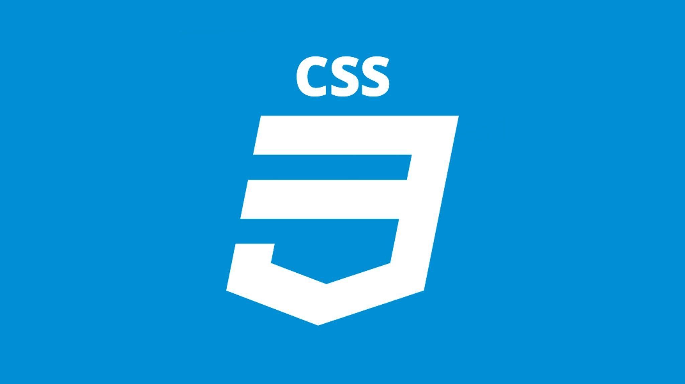
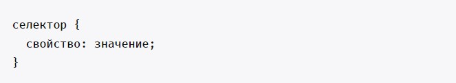
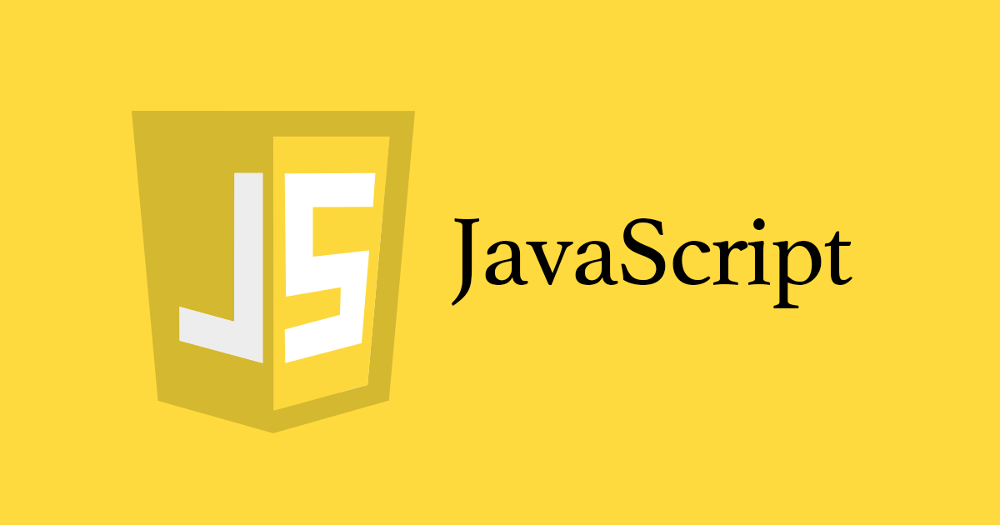
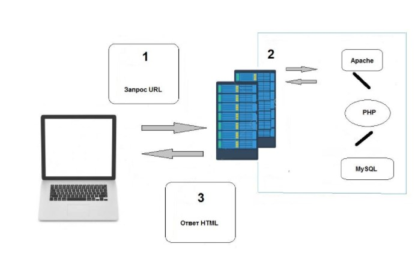
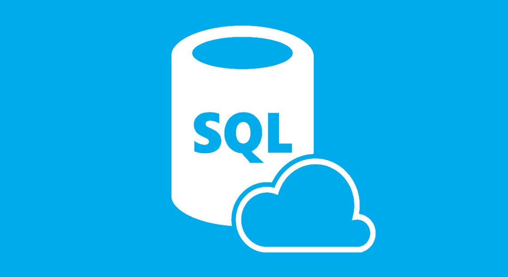
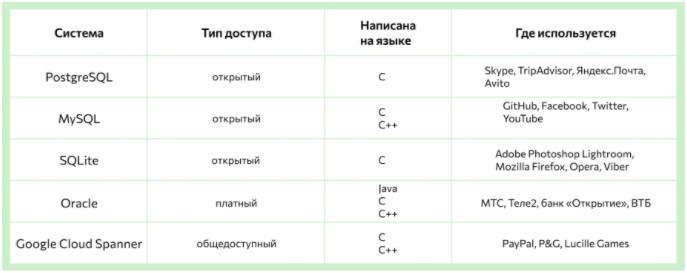

Популярные
Web-технологии
Web-технологии — это технологии формирования и поддержки разных информационных ресурсов в сети интернет.
На данной странице вы можете вкратце ознакомиться с некоторыми современными web-технологиями.
Введение
Современные веб-технологии предоставляют разработчикам неограниченные возможности для реализации своих идей. Для того, чтобы вы могли использовать весь их потенциал, необходимо знать как правильно их использовать. На этой странице мы постарались собрать ссылки на документацию по различным технологиям, которые могут быть вам полезны.
Когда появились Web-технологии, пользоваться компьютерной техникой начали абсолютно новые категории граждан. Список социальных категорий населения, подсоединяющихся к сети интернет с целью поиска информации во всемирной паутине, постоянно увеличивается за счёт людей, которые не считают себя специалистами в сфере информационных технологий. Web-технология в корне изменила понятия об информационной обработке, как и работе с компьютерной техникой тоже.
Web-технологиями является весь набор средств, позволяющих организовать WWW (World Wide Web), то есть всемирную паутину. Так как каждый сеанс является взаимодействием двух сторон, а именно, сервера и клиента, то и Web-технологии делятся на следующие группы:
Серверные программы обеспечивают предоставление тех или иных ресурсов клиентским программам. Клиенты, когда им требуется какой-либо файл или просто какая-то информация от сервера, вырабатывают специальный запрос клиента и отправляют его серверу. Серверная программа выполняет обработку запроса и отправляет ответ сервера, который содержит запрошенную информацию или же извещение об ошибке, в случае недоступности требуемых данных. Данная компьютерная организация, или по другому, принципы формирования вычислительных систем или сетей, именуется архитектурой «клиент-сервер» или двухзвенной организацией. Как раз на базе двухзвенной архитектуры работают практически все интернет — сервисы, включая и WWW.
Для случая WWW в качестве клиентов используются программы веб-обозревателей, то есть веб-браузеры, являющиеся программами для просмотра веб-страниц. В качестве серверов выступают так называемые веб —серверы, которые обрабатывают запросы веб —обозревателей и отправляют им необходимые файлы.
Технологии клиентской стороны
Технологии клиентской стороны включают в свой состав весь набор технологий по созданию веб-страниц (HTML, JavaScript, DHTML и другие).
Кратко познакомимся с самыми популярними из них
HTML
HTML (Hypertext Markup Language) — это код, который используется для структурирования и отображения веб-страницы и её контента. Например, контент может быть структурирован внутри множества параграфов, маркированных списков или с использованием изображений и таблиц данных. Как видно из названия, эта статья даст вам базовое понимание HTML и его функций.
HTML не является языком программирования; это язык разметки, и используется, чтобы сообщать вашему браузеру, как отображать веб-страницы, которые вы посещаете. Он может быть сложным или простым, в зависимости от того, как хочет веб-дизайнер. HTML состоит из ряда элементов, которые вы используете, чтобы вкладывать или оборачивать различные части контента, чтобы заставить контент отображаться или действовать определённым образом. Ограждающие теги могут сделать слово или изображение ссылкой на что-то ещё, могут сделать слова курсивом, сделать шрифт больше или меньше и так далее.
HTML использует разметку («markup») для отображения текста, изображений и другого контента
в веб-браузере. HTML-разметка включает в себя специальные «элементы», такие как
<head>, <title>, <body>, <header>, <footer>, <article>, <section>, <p>, <div>,
<span>, <img>, <aside>, <audio>, <canvas>, <datalist>, <details>, <embed>, <nav>, <output>, <progress>, <video>
и многие другие.
Давайте рассмотрим элемент абзаца более подробно.

Главными частями нашего элемента являются:
- Открывающий тег (Opening tag): Состоит из имени элемента (в данном случае, «p»), заключённого в открывающие и закрывающие угловые скобки. Открывающий тег указывает, где элемент начинается или начинает действовать, в данном случае — где начинается абзац.
- Закрывающий тег (Closing tag): Это то же самое, что и открывающий тег, за исключением того, что он включает в себя косую черту перед именем элемента. Закрывающий элемент указывает, где элемент заканчивается, в данном случае — где заканчивается абзац. Отсутствие закрывающего тега является одной из наиболее распространённых ошибок начинающих и может приводить к странным результатам.
- Контент (Content): Это контент элемента, который в данном случае является просто текстом.
- Элемент(Element): Открывающий тег, закрывающий тег и контент вместе составляют элемент.
CSS
Как и HTML, CSS на самом деле не является языком программирования. Это не язык разметки — это язык таблицы стилей. Объекты, расположенные на странице, размещаются с помощью HTML. А вот CSS отвечает за то, как эти объекты выглядят. Их размер, цвет, фоновое изображение, степень прозрачности, расположение относительно других элементов, поведение при наведении курсора, визуальное изменение кнопок при нажатии и т.п.
Язык CSS быстро стал стандартом в веб-разработке, потому что он позволяет быстро изменить визуальное оформление сайта, не прибегая к использованию более сложных языков программирования. Достаточно ознакомиться с простейшими правилами CSS, и можно легко собрать вполне симпатичный сайт со всем необходимым контентом. «Простота» обеспечивается за счет понятного синтаксиса.
Синтаксис CSS в отдельном файле в соответствующем формате (.css) выглядит так:
- Селектор — это ссылка на элемент в HTML, над которым будет вестись работа (оформление).
- Свойство — определенная характеристика элемента, которую нужно изменить. Например, размер или цвет.
- Значение — цифровое или текстовое обозначение для выбранного свойства.
Глубокое изучение каскадных таблиц поможет сделать ваши сайты более стильными, при этом не перебарщивая с количеством JS-кода, что положительно скажется на производительности ресурса.
JavaScript
JavaScript язык программирования, который позволяет вам создать динамически обновляемый контент, управляет мультимедиа, анимирует изображения, впрочем, делает почти всё, что угодно. JavaScript используется для того, чтобы делать страницы интерактивными, то есть дать пользователю возможность взаимодействовать с элементами. Когда страницы могут реагировать на какие-то действия, это делает их интереснее.
Программы написанные на JavaScript для браузера называются сценариями или скриптами. Процесс их добавления на страницу
осуществляется через тег <script> . При этом их можно как непосредственно разместить на странице, так и в отдельном
файле. Выполняются они автоматически при загрузке страницы.
Начиная с версии ES6 язык значительно преобразился, в нём появился новый синтаксис для написания сложных приложений (классы, модули, итераторы, циклы, генераторы в стиле Python, стрелочные функции, ключевые слова let, const и многое другое).
В настоящее время язык JavaScript уже применяется не только для веба. С помощью него можно написать обычные приложения для десктопных и мобильных операционных систем, использовать его в роли серверного языка (node.js) и др.
Языка JavaScript, как и другие языки программирования, имеет некоторые особенности. Среди основных — это слабая типизация и динамическое приведение типов.
Когда браузер при чтении страницы встречает на ней элемент <script>, браузер останавливает дальнейшую
загрузку страницы и выполняет, подключенный с помощью этого элемента JavaScript код. После его выполнения, он приступает к дальнейшей
загрузке страницы.
JavaScript - это не Java, хоть он и унаследовал некоторые синтаксические конструкции этого языка. Такое название данный язык получил в силу некоторых исторических причин.
Технологии серверной стороны
Технологии серверной стороны состоят из технологий доступа к информационным базам данных в сети интернет (CGI, PHP).
Кратко познакомимся с самыми популярними из них
PHP
PHP (Hypertext PreProcessor, «препроцессор гипертекста») — скриптовый язык программирования. Имеет открытый исходный код. Изначально создавался для разработки веб-приложений, но в процессе обновлений стал языком общего назначения. Основная область применения — разработка скриптов, которые работают на стороне сервера.
PHP — язык с динамической типизацией. Это означает, что переменная не определяется жестко и заранее (если число, то int, если строка — string). Динамическая типизация позволяет присваивать одной и той же переменной несколько значений: она может быть массивом, строкой, числом, объектом и т. д. Динамическая типизация удобная и гибкая, но приводит к потреблению большого количества оперативной памяти и уменьшает скорость работы.
Также PHP — интерпретируемый язык. Это означает, что код, который написан на PHP, не компилируется (преобразуется в машинный), а выполняется строка за строкой с помощью программы-интерпретатора, которая читает каждую из них и выполняет то, что там указано.
PHP хранит состояние, созданное в текущий момент времени. В отличие от классических компилируемых языков программирования, которые работают все время от запуска до остановки программы, PHP-скрипт начинает выполняться с момента обращения веб-сервера и заканчивает (забывает все, что знал), когда возвращает сгенерированный пакет данных обратно веб-серверу.
- Входящее соединение принимает и анализирует веб-сервер. Происходит интерпретация и формируется ответ.
- Как правило, результат работы PHP-интерпретатора (программы, выполняющей PHP-код) — HTML-код. На этом этапе PHP-скрипт преобразуется в статический HTML-код, который может читать браузер. В процессе работы PHP может использовать MySQL — свободную систему управления базами данных (БД). Она выполняет обмен информацией с сервером базы данных на согласованном языке (SQL). Сервер базы данных и веб-сервер образуют тандем, читающий и записывающий информацию и данные, предоставляя их посетителям сайта.
- БД отправляет данные PHP-скрипту, который расставляет их по нужным местам страницы или пакета данных и формирует окончательный ответ. Ответ отправляется обратно веб-серверу, который и возвращает клиенту страницу или пакет данных.
Возможность комбинировать PHP- и HTML-код позволяет создавать динамические страницы, которые показывают каждый раз разную информацию в зависимости от полученных от пользователя данных или настроек.
SQL
SQL — это язык запросов, созданный для того, чтобы получать из базы данных необходимую информацию. Если описать схему работы SQL простыми словами, то специалист формирует запрос и направляет его в базу. Та в свою очередь обрабатывает эту информацию, «понимает», что именно нужно специалисту, и отправляет ответ.
Данные хранятся в виде таблиц, они структурированы и разложены по строкам и столбцам, чтобы ими легче было оперировать. Такой способ хранения информации называют реляционными базами данных (от англ. relation — «отношения»). Название указывает на то, что объекты в такой базе связаны определенными отношениями.
СУБД могут быть коммерческими или иметь открытый код. Системы управления с открытым кодом можно бесплатно использовать в проектах, а также дополнять их документацию и совершенствовать процесс работы с системой. Коммерческие СУБД имеют платный доступ к полным версиям — как правило, такие используют крупные корпорации.
Основные команды SQL:
- SELECT — выбери данные
- FROM — вот отсюда
- JOIN — добавь еще эти таблицы
- WHERE — при таком условии
- GROUP BY — сгруппируй данные по этому признаку
- ORDER BY — отсортируй данные по этому признаку
- LIMIT — нужно такое количество результатов
- ; — конец предложения